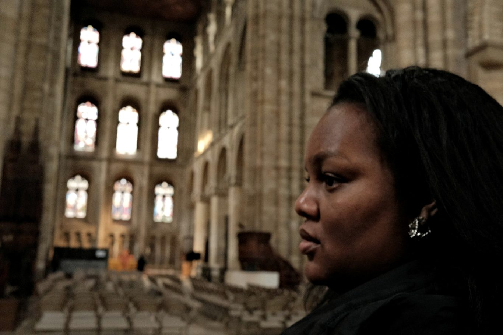
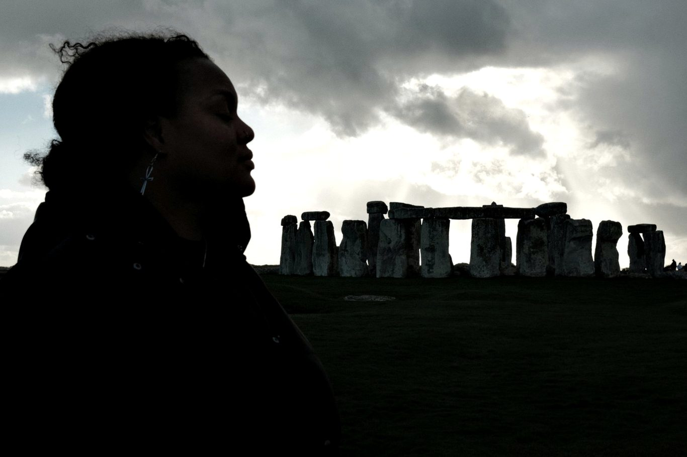

JessicaNyassa
Providing historical research, archival expertise and consultancy for museums, publishers, documentary producers and cultural organisations.

Approach
My work is guided by the careful interrogation of sources, critical engagement with established narratives, and an approach that seeks to understand the past within its own historical context.
Areas of focus
West Africa, 900–1500
The kingdoms and empires of Ghana, Mali, Songhai and Kongo — systems of governance, long-distance trade, and the diverse peoples, cultures and traditions that shaped the region.
Late Antiquity & the Post-Roman World
The later Roman Empire, early Christianity, early medieval Britain and the transformation of the post-Roman world.
Reformation & Revolution
The Reformation, early modern Europe and the French Revolution — societies in periods of significant and often violent change.
Services
What I can do for you
Engagements run from a single day of source work to long-term research partnerships across a project's lifetime.
-
Historical & Archival Research
Original research using primary and secondary sources, archives, databases and specialist scholarship.
-
Manuscript & Primary Source Research
Working with historical documents and manuscripts, including Latin sources, palaeography and codicological analysis.
-
Historical Consultancy & Accuracy
Research, fact-checking and contextual advice for film, television, publishing, games, podcasts and other creative projects.
-
Object, Artwork & Provenance Research
Researching objects, artworks, collections, ownership histories, makers and their wider historical context.
-
Museum & Exhibition Research
Collections research, exhibition development, interpretation, object narratives and supporting historical content.
-
Historical Writing & Interpretation
Transforming complex research into engaging scripts, articles, exhibition text, educational resources and public-facing content.
-
Research Briefs & Source Packs
Tailored timelines, bibliographies, source packs, background reports and research dossiers for teams that need information quickly.
-
Lectures, Talks & Workshops
Historical talks, educational sessions, public programmes and contributions to podcasts, panels and events.

Academic rigour and accessibility need not exist separately. Historical research can be complex without being inaccessible.

About
Bridging academic and public history
History has been a constant fascination from an early age, beginning with early childhood visits to museums and a fascination with uncovering the people, places and stories of the past. That curiosity developed into formal study and, eventually, work across historical research, museums, public history and consultancy.
Central to my approach is a love of storytelling: taking the methods, evidence and critical thinking of scholarship and using them to communicate the past clearly, accurately and engagingly.
Enquiries
Tell me what you're working on
Whether it's a documentary in development, an exhibition in planning, a manuscript that needs checking or a question that has been nagging at you — I'd like to hear about it.